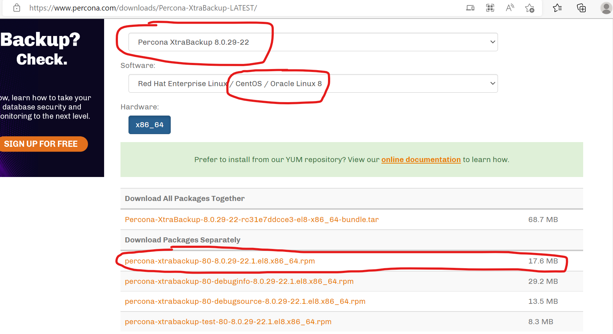
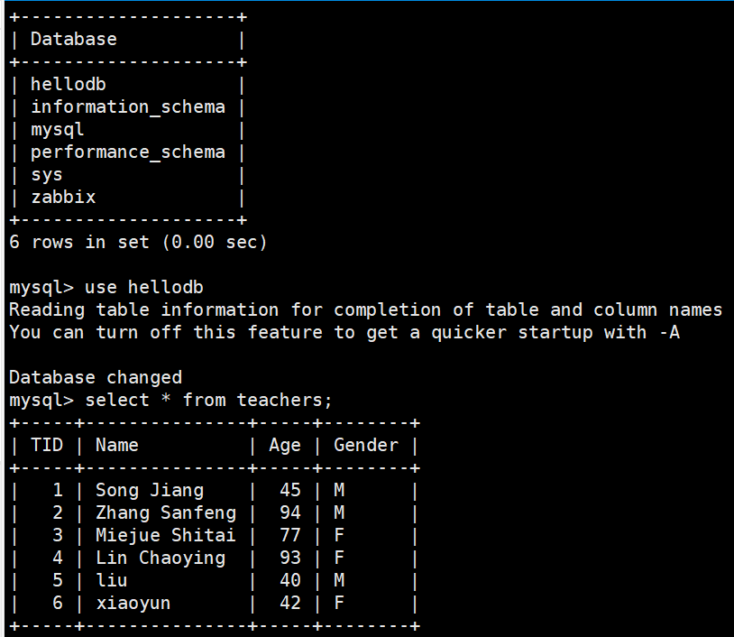
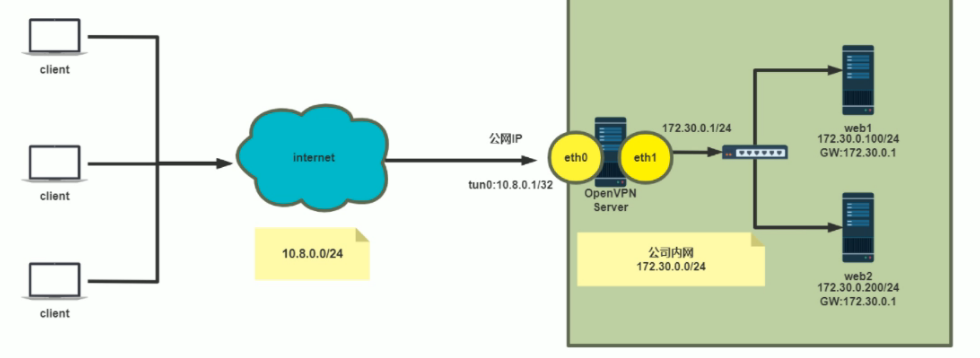
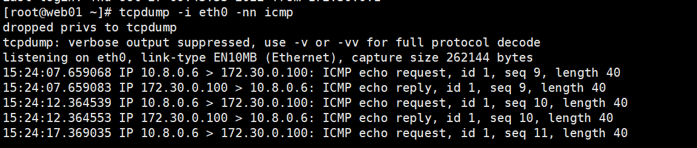

背景 [TOC]
一、简述DDL,DML,DCL,DQL，并且说明mysql各个关键字查询时候的先后顺序 1、DDL：（数据定义语言）是指CREATE，ALTER，DROP语句
DDL允许添加、修改、删除包含数据的逻辑结构，或允许用户访问、维护数据（数据库、表、键、视图等）的逻辑结构。DDL是关于元数据的。
2、DML: （数据操纵语言）是指INSERT，DELETE，UPDATE语句
DML允许自己添加、删除、修改数据
3、DQL：（数据查询语言）是指SELECT，SHOW，HELP语句
SELECT是主要的DQL指令，它会检索需要的数据；SHOW检索有关元数据的信息；HELP是帮助查询命令的作用和用法
4、DCL：（数据控制语言）是指GRANT，REVOKE语句
DCL用于授予、撤销对数据库及其内容的权限。MySQL的权限相当复杂，DCL是关于安全性的。
SELECT查询语句执行的先后顺序：
FROM Clause --> WHERE Clause --> GROUP BY --> HAVING Clause -->SELECT --> ORDER BY --> LIMIT
二、自行设计10个sql查询语句，需要用到关键字[GROUP BY/HAVING/ORDER BY/LIMIT]，至少同时用到两个 为了方便后续实验，导入一个数据库
1 2 3 4 5 6 7 8 9 10 11 12 13 14 [root@Rocky ~]@Rocky ~] Database | hellodb | information_schema | mysql | performance_schema | sys | zabbix |
①将teachers表按年龄从小到大排序，取前两个（order by：以某条件进行排序，默认为正序排序）
1 2 3 4 5 6 7 8 mysql> select * from teachers order by age limit 2; +-----+---------------+-----+--------+ | TID | Name | Age | Gender | +-----+---------------+-----+--------+ | 3 | Miejue Shitai | 77 | F | +-----+---------------+-----+--------+
②将teachers表按年龄从小到大排序，取第2个和第3个（limit 2：取前2个；limit 1，2：取第一个后面的两个）
1 2 3 4 5 6 7 8 mysql> select * from teachers order by age limit 1,2; +-----+---------------+-----+--------+ | TID | Name | Age | Gender | +-----+---------------+-----+--------+ | 4 | Lin Chaoying | 93 | F | +-----+---------------+-----+--------+
③将teachers表按年龄从大到小排序，取前两个（ order by后添加desc，表示倒序排序 ）
1 2 3 4 5 6 7 8 mysql> select * from teachers order by age desc limit 2; +-----+---------------+-----+--------+ | TID | Name | Age | Gender | +-----+---------------+-----+--------+ | 4 | Lin Chaoying | 93 | F | +-----+---------------+-----+--------+
④学生表中以班级为组，求出每个班级有几个，并按正序排序（group by：以某条件进行筛选，然后进行聚合运算；count（*）：每个班级有几个）
1 2 3 4 5 6 7 8 9 10 11 12 13 14 mysql> select classid,count(*)数量 from students group by classid order by 数量; +---------+--------+ | classid | 数量 | +---------+--------+ | 6 | 4 | +---------+--------+
⑤学生表中以班级为组，求出每个班级有几个，并按正序排序，取前3个
1 2 3 4 5 6 7 8 9 mysql> select classid,count(*)数量 from students group by classid order by 数量 limit 3; +---------+--------+ | classid | 数量 | +---------+--------+ | 2 | 3 | +---------+--------+
⑥学生表中以班级为组，求出每个班级有几个，并取前3个
1 2 3 4 5 6 7 8 9 mysql> select classid,count(*)数量 from students group by classid limit 3; +---------+--------+ | classid | 数量 | +---------+--------+ | 4 | 4 | +---------+--------+
⑦将学生表中男生划分成一组，取男生的平均年龄（avg():平均值；having：对分组聚合运算后的结果指定过滤条件）
1 2 3 4 5 6 7 mysql> select gender,avg(age)平均年龄 from students group by gender having gender='M'; +--------+--------------+ | gender | 平均年龄 | +--------+--------------+ | M | 33.0000 | +--------+--------------+
⑧按不同班级进行分组，求每个班级的平均年龄，并取出平均年龄大于30的数据
1 2 3 4 5 6 7 8 9 mysql> select classid,avg(age)平均年龄 from students group by classid having 平均年龄 >30; +---------+--------------+ | classid | 平均年龄 | +---------+--------------+ | NULL | 63.5000 | +---------+--------------+
⑨按不同班级进行分组，求每个班级的平均年龄，并取出平均年龄大于30的前2条数据
1 2 3 4 5 6 7 8 mysql> select classid,avg(age)平均年龄 from students group by classid having 平均年龄 >30 limit 2; +---------+--------------+ | classid | 平均年龄 | +---------+--------------+ | 5 | 46.0000 | +---------+--------------+
⑩按不同班级进行分组，求每个班级的平均年龄，并取出平均年龄大于30的数据，按照倒序排序
1 2 3 4 5 6 7 8 9 mysql> select classid,avg(age)平均年龄 from students group by classid having 平均年龄 >30 order by 平均年龄 desc; +---------+--------------+ | classid | 平均年龄 | +---------+--------------+ | 2 | 36.0000 | +---------+--------------+
三、xtrabackup备份和还原数据库练习 在centos7及以前的版本中，EPEL源中带有percona-xtrabackup包，可以直接yum进行安装。
在centos8中没有percona-xtrabackup包，需要先在官网上下载percona-xtrabackup包
下载地址：https://www.percona.com/downloads/Percona-XtraBackup-LATEST/

只需下载percona-xtrabackup-80-8.0.29-22.1.el8.x86_64.rpm这个包即可，并将包导入到Linux中
实验：利用xtrabackup8.0完全，增量备份及还原MySQL8.0
1 2 3 4 5 6 7 8 9 10 11 12 13 14 15 16 17 18 19 20 21 22 23 24 25 26 27 28 29 30 31 32 33 34 35 36 37 38 39 40 41 42 43 44 45 46 47 48 49 50 51 52 53 54 1 、备份过程#第一步：完全备份 root@Rocky ~ ]#yum -y install percona-xtrabackup-80-8.0.29-22.1.el8.x86_64.rpm #在原主机安装xtrabackup包 root@Rocky ~ ]#mkdir /backup #在原主机上新建backup目录，用来存放备份的数据 root@Rocky ~ ]#xtrabackup -uroot --backup --target-dir=/backup/base 2022 -10 -22 T16:36 :43.440670 +08 :00 0 [Note] [MY-011825 ] [Xtrabackup] completed OK! #将数据备份到/backup/base，其中base目录会自动创建 #第二步：第一次修改数据 insert teachers (name,age,gender ) value ('liu' ,40 ,'M' ;#第三步：第一次增量备份 root@Rocky ~ ]#xtrabackup -uroot --backup --target-dir=/backup/inc1 --incremental-basedir=/backup/base 2022 -10 -22 T17:03 :23.595901 +08 :00 0 [Note] [MY-011825 ] [Xtrabackup] completed OK!#将数据备份到/backup/inc1，基于/backup/base完全备份进行的增量备份 #第四步：第二次修改数据 insert teachers (name,age,gender ) value ('xiaoyun' ,42 ,'F' ;#第五步：第二次增量备份 root@Rocky ~ ]#xtrabackup -uroot --backup --target-dir=/backup/inc2 --incremental-basedir=/backup/inc1 2022 -10 -22 T17:10 :36.646597 +08 :00 0 [Note] [MY-011825 ] [Xtrabackup] completed OK!#将数据备份到/backup/inc2，基于/backup/inc1备份进行的增量备份 #第六步：将数据复制到目标主机（目标主机不用创建backup目录，直接复制目录本身） root@Rocky backup ]#scp -r /backup/ 10.0.0.128:/ 2 、还原过程#第一步：预准备完成备份，此选项--apply-log-only 阻止回滚未完成的事务 root@Rocky8 ~ ]#yum -y install percona-xtrabackup-80-8.0.29-22.1.el8.x86_64.rpm #在目标主机安装xtrabackup包 root@Rocky8 ~ ]#xtrabackup --prepare --apply-log-only --target-dir=/backup/base 2022 -10 -22 T17:24 :54.399051 +08 :00 0 [Note] [MY-011825 ] [Xtrabackup] completed OK!#第二步：合并第一次增量备份到完全备份 root@Rocky8 ~ ]#xtrabackup --prepare --apply-log-only --target-dir=/backup/base --incremental-dir=/backup/inc1 2022 -10 -22 T17:28 :03.937839 +08 :00 0 [Note] [MY-011825 ] [Xtrabackup] completed OK!#第三步：合并第二次增量备份到完全备份，最后一次还原不需要加选项--apply-log-only root@Rocky8 ~ ]#xtrabackup --prepare --target-dir=/backup/base --incremental-dir=/backup/inc2 2022 -10 -22 T17:30 :03.748682 +08 :00 0 [Note] [MY-011825 ] [Xtrabackup] completed OK!#第四步：复制到数据库目录（数据库目录必须为空，且mysql服务不能启动） root@Rocky8 ~ ]#systemctl status mysqld 2022 -10 -22 16 :53 :19 CST; 38 min ago#查看可确认服务已关闭 root@Rocky8 ~ ]#ls /var/lib/mysql/ #查看确认为空 root@Rocky8 ~ ]#xtrabackup --copy-back --target-dir=/backup/base 2022 -10 -22 T17:34 :33.338805 +08 :00 0 [Note] [MY-011825 ] [Xtrabackup] completed OK!#第五步：还原属性 root@Rocky8 ~ ]#chown -R mysql.mysql /var/lib/mysql #将用户和组都更改为mysql #第六步：启动服务 root@Rocky8 ~ ]#systemctl start mysqld

查看目标主机发现有hellodb数据库，且有增量备份的内容
四、实现mysql主从复制，主主复制和半同步复制 1、主从复制 1 2 3 4 5 6 7 8 9 10 11 12 13 14 15 16 17 18 19 20 21 22 23 24 25 26 27 28 29 30 31 32 33 34 35 36 37 38 39 40 41 42 43 44 45 46 47 48 49 50 51 52 53 54 55 56 57 58 59 60 61 62 63 64 65 66 67 68 69 70 71 72 73 74 75 76 77 78 79 80 81 82 83 84 85 86 87 88 89 90 91 92 93 94 95 96 97 98 99 100 101 102 103 主节点配置：@master ~]@master ~]@master ~]@master ~]@master ~]@master ~]@"10.0.0.%" identified by "123456" ; * .* to repluser@'10.0.0.%'; @master ~]@master ~]@master ~] Id | User | Host | db |Command | Time | State | Info | 5 |event_scheduler |localhost | NULL | Daemon | 1451 |Waiting on empty queue | NULL | 8 | root |localhost | NULL | Query | 0 | init |show processlist |@slave1 ~]@slave1 ~]@slave1 ~]@master ~]@slave1 ~]@slave1 ~]@slave1 ~] Database | hellodb | information_schema | mysql | performance_schema | sys | zabbix |* from teachers; TID | Name | Age | Gender | 1 | Song Jiang | 45 | M | 2 | Zhang Sanfeng | 94 | M | 3 | Miejue Shitai | 77 | F | 4 | Lin Chaoying | 93 | F |* * * * * * * * * * * * * * * * * * * * * * * * * * * 1. row * * * * * * * * * * * * * * * * * * * * * * * * * * * * from teachers; TID | Name | Age | Gender | 1 | Song Jiang | 45 | M | 2 | Zhang Sanfeng | 94 | M | 3 | Miejue Shitai | 77 | F | 4 | Lin Chaoying | 93 | F | 5 | wang | 34 | M |
2、主主复制 两个节点，都可以更新数据，并且互为主从
1 2 3 4 5 6 7 8 9 10 11 12 13 14 15 16 17 18 19 20 21 22 23 24 25 26 27 28 29 30 31 32 33 34 35 36 37 38 39 40 41 42 43 44 45 46 47 48 49 50 51 52 Log_name | File_size | Encrypted | binlog.000001 | 459 | No |* from teachers; TID | Name | Age | Gender | 1 | Song Jiang | 45 | M | 2 | Zhang Sanfeng | 94 | M | 3 | Miejue Shitai | 77 | F | 4 | Lin Chaoying | 93 | F | 5 | wang | 34 | M | 6 | li | 34 | M |* from teachers; TID | Name | Age | Gender | 1 | Song Jiang | 45 | M | 2 | Zhang Sanfeng | 94 | M | 3 | Miejue Shitai | 77 | F | 4 | Lin Chaoying | 93 | F | 5 | wang | 34 | M | 6 | li | 34 | M | 7 | sun | 34 | M |
3、半同步复制 1 2 3 4 5 6 7 8 9 10 11 12 13 14 15 16 17 18 19 20 21 22 23 24 25 26 27 28 29 30 31 32 33 34 35 36 37 38 39 40 41 42 43 44 45 46 47 48 'semisync_master.so' ;184 3000 q [root@master ~] 10.0 .0 .%' identified by '123456' ; 10.0 .0 .%'; 'semisync_slave.so' ;185 read -onlyq [root@slave1 ~] '10.0.0.184' ,'repluser' ,'123456' ,3306 ,q [root@slave1 ~]
五、用mycat实现mysql的读写分离 1 2 3 4 5 6 7 8 9 10 11 12 13 14 15 16 17 18 19 20 21 22 23 24 25 26 27 28 29 30 31 32 33 34 35 36 37 38 39 40 41 42 43 44 45 46 47 48 49 50 51 52 53 54 55 56 57 58 59 60 61 62 63 64 65 66 67 68 69 70 71 72 73 74 75 76 77 78 79 80 81 82 83 84 85 86 87 88 89 90 91 92 93 94 95 96 97 98 99 100 101 102 103 104 105 106 107 108 109 110 111 112 113 114 115 116 117 118 119 120 121 122 123 124 125 126 127 128 129 130 131 132 133 134 135 136 137 138 139 140 141 142 143 #先快速搭建mysql主从服务器server enable server -id=185 log -binrestart mysqld #重新加载create user repluser@'10.0.0.%' identified by '123456' ; #创建账号grant replication slave on *.* to repluser@'10.0.0.%' ; #账号授权full -2022 -10 -25. sql server enable server -id=186 read -only restart mysqldfull -2022 -10 -25. sql 10.0 .0 .186 :/backupfull -2022 -10 -25. sql full -2022 -10 -25. sql #编辑备份数据TO #在此行后面添加后面四行'10.0.0.185' ,'repluser' ,'123456' ,3306 ,full -2022 -10 -25. sql #导入备份数据start slave; #开启线程server ~]#mkdir /apps ; tar xf Mycat-server -1.6 .7 .4 -release -20200105164103 -linux.tar.gz -C /apps #创建/apps目录，并将安装包解压至/apps目录server ~]#ls /apps/mycat/bin/ #可以看到mycat启动路径wrapper -linux-x86-32 wrapper -linux-ppc-64 wrapper -linux-x86-64 PATH server ~]#vi /etc/profile.d/mycat.shPATH =/apps/mycat/bin:$PATH server ~]#. /etc/profile.d/mycat.sh #运行脚本3 Gserver ~]#free -h #查看内存是否更改成功cache available2.7 Gi 275 Mi 2.2 Gi 9.0 Mi 303 Mi 2.3 Gi2.0 Gi 0 B 2.0 Giserver ~]#yum -y install java #安装java8066 端口用于连接MyCATserver ~]#ss -ntlpLocal Address:Port Peer Address:Port Process LISTEN 0 128 0.0 .0 .0 :22 0.0 .0 .0 :* users:(("sshd",pid=956 ,fd=4 )) LISTEN 0 1 127.0 .0 .1 :32000 0.0 .0 .0 :* users:(("java",pid=24596 ,fd=4 )) LISTEN 0 50 *:38695 *:* users:(("java",pid=24596 ,fd=66 )) LISTEN 0 100 *:9066 *:* users:(("java",pid=24596 ,fd=87 )) LISTEN 0 50 *:35117 *:* users:(("java",pid=24596 ,fd=68 )) LISTEN 0 128 [::]:22 [::]:* users:(("sshd",pid=956 ,fd=6 )) LISTEN 0 50 *:1984 *:* users:(("java",pid=24596 ,fd=67 )) LISTEN 0 100 *:8066 *:* users:(("java",pid=24596 ,fd=91 )) server ~]#tail /apps/mycat/logs/wrapper .log INFO | jvm 1 | 2022 /10 /25 09 :42 :33 | MyCAT Server startup successfully. see logs in logs/mycat.log #startup successfully：启动成功.0 .0 .184 -P8066 #用户root，密码123456 是mycat自己自动生成的账号密码（/apps/mycat/conf/server .xml可以在这修改账号密码）none )]> show databases; #此时只有一个测试数据库（虚拟的）DATABASE |3306 ，我们可以把mycat的端口号改为3306 server ~]#mycat stopserver ~]#vim /apps/mycat/conf/server .xmlname ="serverPort">3306 </property> <property name ="managerPort">9066 </property> #添加此行create user admin @'10.0.0.%' identified by '123456' ;grant all on hellodb.* to admin @'10.0.0.%' ;server ~]#vim /apps/mycat/conf/schema .xmlschema name ="TESTDB" checkSQLschema="false" sqlMaxLimit="100"false name ="dn1" dataHost="localhost1" database ="hellodb" /> #将原数据库改为hellodbname ="localhost1" maxCon="1000" minCon="10" balance="1" #将balance=0 改为=1 select user ()</heartbeat>user ="root" password ="123456">user ="root" password ="123456" />1 ，表示读写分离。以上配置达到的效果就是10.0 .0 .18 为主库，10.0 .0 .28 为从库start wrapper .log INFO | jvm 1 | 2022 /10 /25 11 :22 :40 | MyCAT Server startup successfully. see logs in logs/mycat.log .0 .0 .184 #已经将端口号改为默认端口号3306 了，不用在输入了none )]> show databases;DATABASE |none )]> use TESTDBshow tables ;
六、实现openvpn部署，并且测试通过，输出博客或者自己的文档存档 
1、阿里云网络配置 ①配置参数
1 2 3 4 5 6 7 8 9 10 11 12 13 14 15 16 17 18 19 20 21 22 23 24 25 1 阿里云创建专有网络: 华北3 张家口可用区A区172.16 .0.0 /12 ,默认资源组IPv4 的地址段 172.30 .0.0 /24 22 端口2 创建OpenVPN 服务器有公网IP 的实例1 个: 华北3 张家口可用区A区2 vCPU 4 G:magedu-net1 交换机:magedu-net1-n68 IP 私网IP ：172.30 .0.1 /24 按量收费 100 M 22 ,3389 ,icmpRocky Linux 8.6 SSD 云盘40 G3 创建局域网的服务器无公网IP 的实例2 个: 华北3 张家口可用区A区1 vCPU2GRocky Linux 8.6 ESSD 云盘40 G:magedu-net1 magedu-net1-n68IP 私网IP ：172.30 .0.100 /24 172.30 .0.200 /24 4 重设所有实例密码5 修改安全组打开 1194 /TCP /UDP
②验证主机配置
1 2 3 4 5 6 7 8 9 10 11 12 13 14 15 16 17 18 19 20 21 22 23 24 25 [root@Rocky ~]47.92 .232.42 (47.92 .232.42 )' can't be established.to Alibaba Cloud Elastic Compute Service !2 : eth0: <BROADCAST,MULTICAST,UP,LOWER_UP> mtu 1500 qdisc fq_codel state UP group default qlen 1000 00 :16 :3 e:21 :bc:7 f brd ff:ff:ff:ff:ff:ffinet 172.30 .0.1 /24 brd 172.30 .0.255 scope global dynamic noprefixroute eth0172.30 .0.100 's password: to Alibaba Cloud Elastic Compute Service !27 09 :33 :58 2022 from 172.30 .0.1 172.30 .0.100 172.30 .0.200 's password: to Alibaba Cloud Elastic Compute Service !172.30 .0.200
③安装httpd
1 2 3 [root@web02 ~] # yum -y install httpd;systemctl enable --now httpd;hostname > /var /www/html /index.html
2、安装openvpn ①查看及安装
1 2 3 4 5 6 7 8 9 10 11 12 13 14 15 16 17 需要用到两个软件 openVPN和easy-rsa（openVPN系统自带，easy-rsa不自带需要配置epel源）@openvpn -server ~]# yum list openvpn 0 :01 :14 ago on Thu 27 Oct 2022 10 :06 :06 AM CST.2.4 .12 -1. el8 epel@openvpn -server ~]# yum list easy-rsa 0 :06 :25 ago on Thu 27 Oct 2022 09 :52 :01 AM CST.to list#配置epel源 @openvpn -server ~]# yum install -y https://mirrors.aliyun.com/epel/epel-release-latest-8.noarch.rpm @openvpn -server ~]# sed -i 's|^#baseurl=https://download.example/pub|baseurl=https://mirrors.aliyun.com|' /etc/yum.repos.d/epel* @openvpn -server ~]# sed -i 's|^metalink|#metalink|' /etc/yum.repos.d/epel* #安装两个软件 @openvpn -server ~]# yum -y install easy-rsa #证书管理软件 @openvpn -server ~]# yum -y install openvpn #openvpn服务器端
②准备相关配置文件
1 2 3 4 5 6 7 8 9 10 11 12 13 14 15 16 17 18 19 20 #生成服务器配置文件 @openvpn -server easy-rsa]# cp /usr/share/doc/openvpn/sample/sample-config-files/server.conf /etc/openvpn/ @openvpn -server easy-rsa]# cd /etc/openvpn @openvpn -server openvpn]# ls #准备证书颁发相关文件 @openvpn -server ~]# mkdir -p /data/easy-rsa @openvpn -server ~]# ls /data/easy-rsa #查看复制结果 #准备颁发证书相关变量的配置文件 @openvpn -server ~]#cp /usr/share/doc/easy-rsa/vars.example /data/easy-rsa/vars @openvpn -server ~]# cd /data/easy-rsa @openvpn -server easy-rsa]# ls #修改给CA和OpenVPN服务器颁发的证书的有效期,可适当加长 @openvpn -server easy-rsa]# vim vars 36500 #CA的证书有效期 36500 #此次是指的openvpn的有效期，后面再配置客户端（用户）的有效期
3、准备证书相关文件 ①初始化PKI生成PK相关目录和文件
1 2 3 4 5 6 7 8 9 10 11 12 13 14 15 16 17 18 19 20 21 22 23 24 25 [root@openvpn-server ~]# cd /data/easy-rsa server easy-rsa]# ./easyrsa init-pki using Easy-RSA configuration from : /data/easy-rsa/varsis : /data/easy-rsa/pkiserver easy-rsa]# tree private client server
②创建CA机构环境
1 2 3 4 5 6 7 8 9 10 11 12 13 14 15 16 17 18 19 20 21 22 23 24 25 26 27 28 29 30 31 32 33 34 35 36 37 38 39 #给CA颁发证书（自签名证书） server ~]# cd /data/easy-rsa server easy-rsa]# ./easyrsa build-ca nopass #nopass表示生成的私钥没有设置密码，生产中要设置 server easy-rsa]# tree #生成了ca.crt文件和其他文件 #CA的证书 index .txt #颁发证书生成的索引信息 index .txt.attrprivate client server
③创建openVPN服务器证书申请
1 2 3 4 5 6 7 8 9 10 11 12 13 14 15 16 17 18 19 20 21 22 23 24 25 26 27 28 29 30 31 32 33 34 35 36 37 38 39 40 41 42 #创建服务器证书申请文件，其中server是文件前缀 server ~]# cd /data/easy-rsa server easy-rsa]# ./easyrsa gen-req server nopass server .req #证书申请文件 private /server .key #私钥文件 server easy-rsa]# tree index .txtindex .txt.attrprivate server .key #此时新增了私钥文件 server .req #新增了证书申请文件 client server
④给openVPN服务器颁发证书
1 2 3 4 5 6 7 8 9 10 11 12 13 14 15 16 17 18 19 20 21 22 23 24 25 26 27 28 29 30 31 32 33 34 35 36 37 38 39 40 41 42 43 44 45 [root@openvpn-server ~]# cd /data/easy-rsa #第一个server表示证书的类型,第二个server表示请求文件名的前缀 server easy-rsa]# ./easyrsa sign server server server .crtserver easy-rsa]# tree 746 A3EC66A04B10F5BEAABC519143A3F.pem #颁发证书的备份文件 index .txtindex .txt.attrindex .txt.attr.oldindex .txt.oldserver .crt #给服务器颁发的证书 private server .keyserver .reqclient server
⑤创建Diffie-Hellman密钥
1 2 3 4 5 6 7 8 9 10 11 12 13 14 15 16 17 18 19 20 21 22 23 24 25 26 27 28 29 30 31 32 33 34 35 36 37 38 39 40 41 42 43 44 45 [root@openvpn-server ~]# cd /data/easy-rsa server easy-rsa]# ./easyrsa gen-dh 2048 created at /data/easy-rsa/pki/dh.pemserver easy-rsa]# tree 746 A3EC66A04B10F5BEAABC519143A3F.pem#生成的加密文件 index .txtindex .txt.attrindex .txt.attr.oldindex .txt.oldserver .crtprivate server .keyserver .reqclient server
⑥创建客户端证书申请
1 2 3 4 5 6 7 8 9 10 11 12 13 14 15 16 17 18 19 20 21 22 23 24 25 26 27 28 29 30 31 32 33 34 35 36 37 38 39 40 41 42 43 44 45 46 47 48 49 #为了快捷，目录仍使用服务器端目录（正常最好设置客户端目录，进行区分） server ~]# cd /data/easy-rsa server easy-rsa]# ./easyrsa gen-req magekecheng nopass private /magekecheng.keyserver easy-rsa]# tree 746 A3EC66A04B10F5BEAABC519143A3F.pemindex .txtindex .txt.attrindex .txt.attr.oldindex .txt.oldserver .crtprivate server .keyserver .reqclient server
⑦给客户端颁发证书
1 2 3 4 5 6 7 8 9 10 11 12 13 14 15 16 17 18 19 20 21 22 23 24 25 26 27 28 29 30 31 32 33 34 35 36 37 38 39 40 41 42 43 44 45 46 47 48 49 50 51 52 #一般用户的证书有效期为3-6个月，所以在颁发证书前，需要设置有效期 server ~]# cd /data/easy-rsa server easy-rsa]# vim vars 180 #时间有效期180天 server easy-rsa]# ./easyrsa sign client magekecheng #客户的证书 server easy-rsa]# tree 746 A3EC66A04B10F5BEAABC519143A3F.pem998 A52A40FE7B270749799A0A0F968A2.pemindex .txtindex .txt.attrindex .txt.attr.oldindex .txt.old#客户端的证书 server .crtprivate server .keyserver .reqclient server
⑧将CA和服务器证书相关文件复制到服务器相应的目录
1 2 3 4 [root@openvpn-server easy-rsa]# mkdir /etc/ openvpn/certs/ca.crt pki/ dh.pem pki/issued/ server.crt pki/private/ server.key /etc/ openvpn/certs #将四个文件拷贝到/ etc/openvpn/ certs/etc/ openvpn/certs
⑨将客户端私钥与证书相关文件复制到服务器相关的目录
1 2 3 4 5 [root@openvpn-server easy-rsa]# mkdir /etc/ openvpn/client/m agekecheng//ca.crt pki/i ssued/magekecheng.crt pki/ private /magekecheng.key / etc/openvpn/ client/magekecheng/ /etc/ openvpn/client/m agekecheng//etc/ openvpn/client/m agekecheng/
4、修改OpenVPN服务器配置文件 1 2 3 4 5 6 7 8 9 10 11 12 13 14 15 16 17 18 19 20 21 22 23 24 25 26 [root@openvpn-server openvpn]1194 /etc/ openvpn/certs/ ca.crt /etc/ openvpn/certs/ server.crt /etc/ openvpn/certs/ server.key /etc/ openvpn/certs/ dh.pem10.8 .0.0 255.255 .255.0 "route 172.30.0.0 255.255.255.0" 10 120 256 -CBC "compress lz4-v2" 2048 /var/ log/openvpn/ openvpn-status.log /var/ log/openvpn/ openvpn.log3 20 2 openvpn openvpn 6 Oct 27 12 :50 /var/ log/openvpn
5、启动openvpn 1 2 3 4 5 6 7 8 9 10 11 12 13 14 15 16 /usr/s bin/openvpn --cd /etc/openvpn/ --config %i.confq [root@openvpn-server openvpn]
6、准备OpenVPN客户端配置文件 1 2 3 4 5 6 7 8 9 10 11 12 13 14 15 16 17 18 19 20 21 22 23 24 25 [root@openvpn-server openvpn]47.92 .232.42 1194 256 -CBC3 q [root@openvpn-server openvpn]
7、实现OpenVPN客户端 7.1、Windows配置部署OpenVPN客户端 官方客户端下载地址：
https://openvpn.net/community-downloads/
openvpn客户端安装过程：
将下载的压缩包解压到此目录下
连接成功后，电脑自动获取地址（10.8.0.6）
此时openvpn服务器也获取一个地址
1 2 3 4 5 6 7 8 9 10 11 [root@openvpn-server magekecheng]2 : eth0: <BROADCAST,MULTICAST,UP,LOWER_UP> mtu 1500 qdisc fq_codel state UP group default qlen 1000 00 :16 :3 e:21 :bc:7 f brd ff:ff:ff:ff:ff:ffinet 172.30 .0.1 /24 brd 172.30 .0.255 scope global dynamic noprefixroute eth0315339583 sec preferred_lft 315339583 secinet6 fe80::216 :3 eff:fe21:bc7f/64 scope link 3 : tun0: <POINTOPOINT,MULTICAST,NOARP,UP,LOWER_UP> mtu 1500 qdisc fq_codel state UNKNOWN group default qlen 100 none inet 10.8 .0.1 peer 10.8 .0.2 /32 scope global tun0
此时电脑就可以直接连接openvpn了
8、实现访问VPN服务器的内网主机 但需要注意的是此时仍无法连接到openvpn后面的机器
因为openvpn接收到请求后发现地址不是自己，就把请求扔掉了，所以需要设置防火墙
1 2 3 4 #在服务器开启ip_forward转发功能[root@openvpn-server magekecheng] #echo net.ipv4 .ip_forward = 1 >> /etc/sysctl.conf [root@openvpn-server magekecheng] #sysctl -p .ipv4 .ip_forward = 1
此时仍是ping不同，但是后面的地址收到请求，也回应了

此时ping不通，是因为双方的ip不在一个网段，回应时走的路由器（网关172.30.0.253），但路由器找不到地址
1 2 3 4 5 [root@web01 ~] # route -n0.0.0.0 172 .30 .0 .253 0 .0 .0 .0 UG 100 0 0 eth0172.30.0.0 0 .0 .0 .0 255 .255 .255 .0 U 100 0 0 eth0
解决此问题的方法：①在web01机器上添加到10.8.0.0/24网段的路由
1 2 #在内网每个主机上添加路由（阿里云服务器不支持修改路由） @web01 ~]#route add -net 10.8.0.0/24 gw 172.30.0.1
②在OpenVPN服务器配置iptables规则
1 2 3 4 5 6 7 8 9 10 11 [root@openvpn-server magekecheng]# iptables -t nat -A POSTROUTING -s 10.8 .0 .0 /24 ! -d 10.8 .0 .0 /24 -j SNAT server magekecheng]# iptables -t nat -vnL #查看添加的规则policy ACCEPT 0 packets, 0 bytes)in out source destination INPUT (policy ACCEPT 0 packets, 0 bytes)in out source destination policy ACCEPT 0 packets, 0 bytes)in out source destination 0 0 SNAT all policy ACCEPT 0 packets, 0 bytes)in out source destination
此时就可以ping通了，直接访问网页了